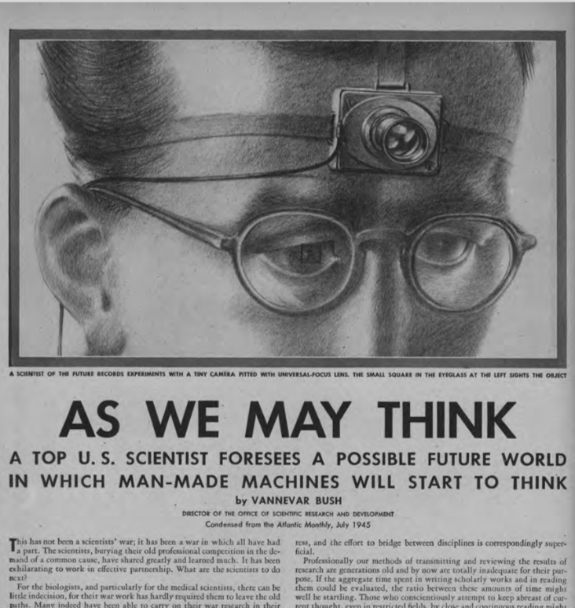
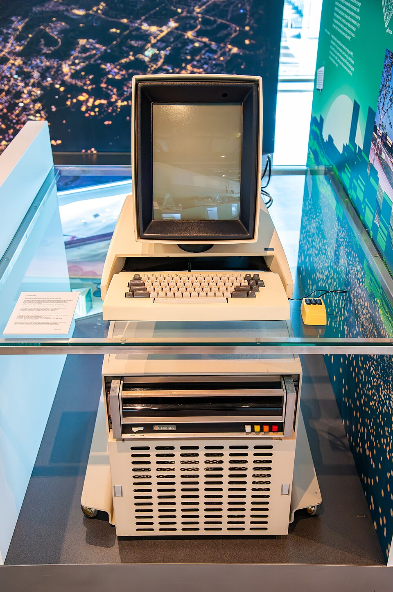
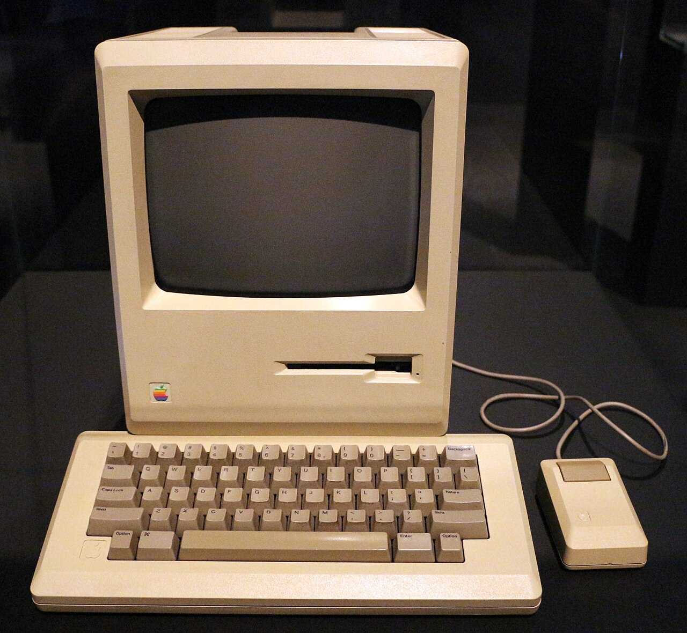
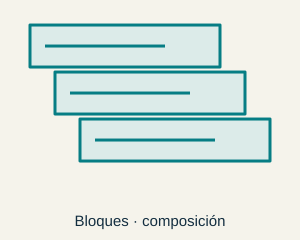
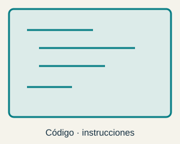
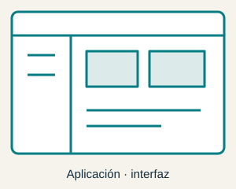
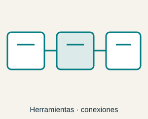
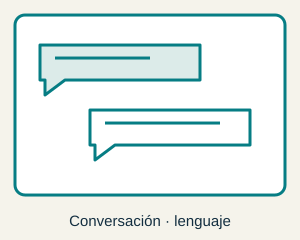

INTERACCIÓN Y EXPERIENCIA DE USUARIO
IEU Leer · conversar · ampliar
Interacción y Experiencia de Usuario
Una clase para leer, conversar y ampliar Antes de cada sesión, lee los apuntes del tema y anota una idea y una pregunta. En la videoconferencia usaremos las diapositivas para poner ejemplos en común, debatir y relacionar el tema con vuestra experiencia.
Los apuntes completos están disponibles en HTML .
01 · Sesión de 1 hora
Presentación Lectura previa
1. PRESENTACIÓN · 1.2. Un poco de historia · 1.3. Un poco de teoría
Trae una idea que te haya llamado la atención y una duda. No hace falta preparar una exposición: usaremos la lectura como punto de partida para pensar juntos.
5 min Conectar con la lectura
15 min Recorrer ideas y ejemplos
30 min Discusión guiada
10 min Síntesis y próximos pasos
1.1 Datos de la asignatura
01 Crear AppInventor Construir una aplicación móvil para resolver una necesidad propia.
→ 02 Conversar n8n Conectar un agente conversacional con un flujo de trabajo.
→ 03 Explorar Unity Crear experiencias de realidad virtual, aumentada o mixta.
→ 04 Narrar Twine Diseñar una historia interactiva con decisiones y consecuencias.
→ 05 Evaluar UX Observar el uso y valorar la experiencia de las personas.
PRESENTACIÓN Temario
End-user development y lenguajes visuales y de bloques
Interacción multimodal y verbal
Entornos inmersivos : realidad virtual, aumentada y mixta
Videojuegos y aprendizaje : ludificación y evaluación
Usabilidad y experiencia de usuario
Bibliografía
Shneiderman, Plaisant, Cohen, Jacobs, Elmqvist (2018). Designing the User Interface. Strategies for Effective Human-Computer Interaction , 6th Edition, Pearson.
A. J. Ko: User Interface Software and Technology , User Interface Software and Technology
Benyon, D. (2013): Designing Interactive Systems. A comprehensive guide to HCI, UX and interaction design , Addison Wesley.
Bibliografía
PRESENTACIÓN Temario
End-user development y lenguajes visuales y de bloques
Interacción multimodal y verbal
Entornos inmersivos : realidad virtual, aumentada y mixta
Videojuegos y aprendizaje : ludificación y evaluación
Usabilidad y experiencia de usuario
Bibliografía
Shneiderman, Plaisant, Cohen, Jacobs, Elmqvist (2018). Designing the User Interface. Strategies for Effective Human-Computer Interaction , 6th Edition, Pearson.
A. J. Ko: User Interface Software and Technology , User Interface Software and Technology
Benyon, D. (2013): Designing Interactive Systems. A comprehensive guide to HCI, UX and interaction design , Addison Wesley.
Bibliografía Volver
PRESENTACIÓN Temario
End-user development y lenguajes visuales y de bloques
Interacción multimodal y verbal
Entornos inmersivos : realidad virtual, aumentada y mixta
Videojuegos y aprendizaje : ludificación y evaluación
Usabilidad y experiencia de usuario
Bibliografía
Shneiderman, Plaisant, Cohen, Jacobs, Elmqvist (2018). Designing the User Interface. Strategies for Effective Human-Computer Interaction , 6th Edition, Pearson.
A. J. Ko: User Interface Software and Technology , User Interface Software and Technology
Benyon, D. (2013): Designing Interactive Systems. A comprehensive guide to HCI, UX and interaction design , Addison Wesley.
Bibliografía Volver
PRESENTACIÓN Temario
End-user development y lenguajes visuales y de bloques
Interacción multimodal y verbal
Entornos inmersivos : realidad virtual, aumentada y mixta
Videojuegos y aprendizaje : ludificación y evaluación
Usabilidad y experiencia de usuario
Bibliografía
Shneiderman, Plaisant, Cohen, Jacobs, Elmqvist (2018). Designing the User Interface. Strategies for Effective Human-Computer Interaction , 6th Edition, Pearson.
A. J. Ko: User Interface Software and Technology , User Interface Software and Technology
Benyon, D. (2013): Designing Interactive Systems. A comprehensive guide to HCI, UX and interaction design , Addison Wesley.
Bibliografía Volver
PRESENTACIÓN Temario
End-user development y lenguajes visuales y de bloques
Interacción multimodal y verbal
Entornos inmersivos : realidad virtual, aumentada y mixta
Videojuegos y aprendizaje : ludificación y evaluación
Usabilidad y experiencia de usuario
Bibliografía
Shneiderman, Plaisant, Cohen, Jacobs, Elmqvist (2018). Designing the User Interface. Strategies for Effective Human-Computer Interaction , 6th Edition, Pearson.
A. J. Ko: User Interface Software and Technology , User Interface Software and Technology
Benyon, D. (2013): Designing Interactive Systems. A comprehensive guide to HCI, UX and interaction design , Addison Wesley.
Bibliografía Volver
PRESENTACIÓN Temario
End-user development y lenguajes visuales y de bloques
Interacción multimodal y verbal
Entornos inmersivos : realidad virtual, aumentada y mixta
Videojuegos y aprendizaje : ludificación y evaluación
Usabilidad y experiencia de usuario
Bibliografía
Shneiderman, Plaisant, Cohen, Jacobs, Elmqvist (2018). Designing the User Interface. Strategies for Effective Human-Computer Interaction , 6th Edition, Pearson.
A. J. Ko: User Interface Software and Technology , User Interface Software and Technology
Benyon, D. (2013): Designing Interactive Systems. A comprehensive guide to HCI, UX and interaction design , Addison Wesley.
Bibliografía Volver 1.1 Datos de la asignatura
02 Entornos inmersivos 25 % 1.2 Un poco de historia
Un poco de historia Un poco de historia
Historia de las interfaces de usuario (WIMP)
Un poco de historia Douglas Engelbart
En 1962, en el Stanford Research Institute, desarrolló el NLS (oN-Line System ), un sistema de interacción humano-computador que permitía al usuario interactuar con la computadora a través de un teclado, un ratón y una pantalla. Este sistema fue el antecedente de los sistemas de interacción gráfica de hoy en día.
Alan Kay
En 1968, en el Xerox Palo Alto Research Center (PARC), desarrolló Smalltalk , un lenguaje de programación orientado a objetos que permitía la creación de interfaces gráficas de usuario. Este lenguaje fue el antecedente de los lenguajes de programación orientados a objetos de hoy en día.
Alan Kay
En 1973, Xerox desarrolló Xerox Alto, el primer prototipo con interfaces gráficas de usuario WIMP (Windows, Icons, Menus, Pointer).
Alan Kay Alan Kay
La interfaz WIMP de Xerox Alto fue la primera GUI que permitía la creación de ventanas, iconos, menús y ratón. Esta interfaz fue el antecedente de las interfaces gráficas de usuario de hoy en día.
Xerox Alto (1973) no fue un producto comercial, pero su tecnología fue licenciada primero por Apple y luego por Microsoft para sus propios sistemas operativos. Xerox Star (1981) fue el primer producto comercial que utilizó la interfaz WIMP, pero no tuvo éxito en el mercado debido a su precio.
Alan Kay Alan Kay
Xerox WIPM: Del laboratorio a la edición interactiva
La restauración del Alto permite observar herramientas de edición, dibujo, red y Smalltalk en una misma plataforma. La demostración de Bravo muestra selección de texto, inserción, copia, formato y desplazamiento por documentos. Estas operaciones ayudan a estudiar cómo la representación visible y la rapidez de respuesta hacen posible trabajar sobre un resultado mientras se construye.
Vídeo : Xerox Alto Restoration — Demo : observar las diferencias entre Bravo y el entorno de ventanas de Smalltalk.
Vídeo : Yesterday’s Computer of Tomorrow — Bravo Demo : comparar sus selecciones y modos de edición con un procesador de texto actual.
Vídeo : All the Widgets (1990), Brad A. Myers : visionado complementario para recorrer la historia de los controles de interfaz.
Steve Jobs
Steve Jobs visitó el PARC de Xerox en 1979 y se llevó consigo la idea de la interfaz gráfica de usuario WIMP.
Steve Jobs
En 1983, Jobs presentó el Apple Lisa , el primer ordenador personal de Apple que operaba con interfaz gráfica de usuario WIMP y un ratón.
La tecnología del Lisa fue utilizada posteriormente en el Apple Macintosh (1984), que se convirtió en el primer ordenador personal de éxito comercial con interfaz gráfica de usuario WIMP.
Steve Jobs
How Steve Jobs got the ideas of GUI from XEROX [9'40"]
VIDEO
Steve Jobs Steve Jobs
Macintosh WIMP: Innovación técnica y difusión de una interfaz
El fragmento documental sobre la visita de Jobs a PARC y la retrospectiva sobre Xerox permiten separar dos problemas: inventar una forma de interacción y convertirla en un producto que se difunde. La historia de las GUI no se explica solo por una persona o una fecha; intervienen investigación, demostraciones, decisiones de producto y adaptación de ideas anteriores.
Vídeos : How Steve Jobs got the ideas of GUI from XEROX y Xerox — The Company That Threw Away Everything .
Lectura crítica : el segundo video mezcla historia tecnológica con una valoración empresarial de su autor. Sus pronósticos sobre Xerox no son hechos históricos ni se usan aquí como descripción de su situación actual.
Bill Gates
Bill Gates incorpora la interfaz WIMP a Windows.
Bill Gates
Bill Gates a Steve Jobs , sobre la tecnología de Xerox
Bill Gates Steve Jobs (again)
Apple incorpora las pantallas táctiles capacitivas a sus dispositivo móvil iPhone, lo que amplía el interés en nuevas formas de entrada y en las interfaces gráficas de usuario basadas en gestos .
Steve Jobs (again)
Es importante distinguir entre las mejores interfaces de usuario para entrada y las mejores para salida .
Sam Altman
Sam Altman, director ejecutivo de Open AI, propone el término Language User Interface (LUI) para referirse a las interfaces de usuario basadas en lenguaje natural :
Sam Altman
Interacciones conversacionales (chatbots)
Sugerencias generadas por Large Language Models (LLM)
Interacciones contextualizadas
Sam Altman
A pesar de que los LLM son una tecnología clave para la interacción verbal de entrada (chatbots), las interfaces de salida siguen siendo muchas veces gráficas, visuales o de otro tipo (por ejemplo, hápticas).
Sam Altman 
Vannevar Bush
Fue un físico estadounidense que trabajó en el MIT y en el Laboratorio de Investigación de la Oficina de Servicios de Guerra durante la Segunda Guerra Mundial. En 1945 publicó un artículo en la revista Atlantic Monthly titulado As We May Think en el que propuso un sistema de almacenamiento y recuperación de información basado en la idea de un hipotético dispositivo denominado memex .
Vannevar Bush
Vannevar Bush Vannevar Bush
Memex fue el hipotético dispositivo hipertextual propuesto por Bush, un sistema de almacenamiento y recuperación de información que permitía la navegación entre documentos y la creación de hipervínculos entre ellos. Bush propuso que el dispositivo fuera capaz de almacenar y recuperar información de forma automática, de forma que el usuario pudiera concentrarse en la búsqueda de información y no en la gestión de la misma.
Vannevar Bush Vannevar Bush
Memex: Del archivo al recorrido de asociaciones
La animación del Memex muestra cómo una consulta se convierte en un recorrido: el usuario relaciona documentos, incorpora comentarios y conserva caminos que puede recuperar y compartir. El interés está en representar las relaciones que construye una persona, además de almacenar los documentos.
Vídeo : Memex animation — Vannevar Bush’s diagrams made real . Es una recreación posterior de la propuesta de Bush, no una filmación de una máquina construida en 1945.
Volver Ivan Sutherland · Sketchpad, 1962–1963 · MIT Museum / CHM 102652182 Ivan Sutherland
En 1963, en el MIT, desarrolló el primer prototipo de un dispositivo de interacción humano-computador, el Sketchpad , que permitía al usuario interactuar con la computadora dibujando en una pantalla. Este dispositivo fue el antecedente de los sistemas de interacción gráfica de hoy en día.
Ivan Sutherland Ivan Sutherland
Sketchpad: dibujar, imponer relaciones y modificar
En la demostración de Sketchpad, el lápiz luminoso permite introducir figuras y actuar sobre ellas. La pantalla funciona como una ventana sobre un espacio de dibujo mayor. La interacción no consiste únicamente en producir una imagen: las relaciones entre sus elementos permiten modificar la construcción conservando su estructura.
Vídeos : Ivan Sutherland Sketchpad Demo 1963 .
Volver 
Alan Kay
En 1968, en el Xerox Palo Alto Research Center (PARC), desarrolló Smalltalk , un lenguaje de programación orientado a objetos que permitía la creación de interfaces gráficas de usuario. Este lenguaje fue el antecedente de los lenguajes de programación orientados a objetos de hoy en día.
Alan Kay
En 1973, Xerox desarrolló Xerox Alto, el primer prototipo con interfaces gráficas de usuario WIMP (Windows, Icons, Menus, Pointer).
Alan Kay Alan Kay
La interfaz WIMP de Xerox Alto fue la primera GUI que permitía la creación de ventanas, iconos, menús y ratón. Esta interfaz fue el antecedente de las interfaces gráficas de usuario de hoy en día.
Xerox Alto (1973) no fue un producto comercial, pero su tecnología fue licenciada primero por Apple y luego por Microsoft para sus propios sistemas operativos. Xerox Star (1981) fue el primer producto comercial que utilizó la interfaz WIMP, pero no tuvo éxito en el mercado debido a su precio.
Alan Kay Alan Kay
Xerox WIPM: Del laboratorio a la edición interactiva
La restauración del Alto permite observar herramientas de edición, dibujo, red y Smalltalk en una misma plataforma. La demostración de Bravo muestra selección de texto, inserción, copia, formato y desplazamiento por documentos. Estas operaciones ayudan a estudiar cómo la representación visible y la rapidez de respuesta hacen posible trabajar sobre un resultado mientras se construye.
Vídeo : Xerox Alto Restoration — Demo : observar las diferencias entre Bravo y el entorno de ventanas de Smalltalk.
Vídeo : Yesterday’s Computer of Tomorrow — Bravo Demo : comparar sus selecciones y modos de edición con un procesador de texto actual.
Vídeo : All the Widgets (1990), Brad A. Myers : visionado complementario para recorrer la historia de los controles de interfaz.
Volver 
Steve Jobs
Steve Jobs visitó el PARC de Xerox en 1979 y se llevó consigo la idea de la interfaz gráfica de usuario WIMP.
Steve Jobs
En 1983, Jobs presentó el Apple Lisa , el primer ordenador personal de Apple que operaba con interfaz gráfica de usuario WIMP y un ratón.
La tecnología del Lisa fue utilizada posteriormente en el Apple Macintosh (1984), que se convirtió en el primer ordenador personal de éxito comercial con interfaz gráfica de usuario WIMP.
Steve Jobs
How Steve Jobs got the ideas of GUI from XEROX [9'40"]
VIDEO
Steve Jobs Steve Jobs
Macintosh WIMP: Innovación técnica y difusión de una interfaz
El fragmento documental sobre la visita de Jobs a PARC y la retrospectiva sobre Xerox permiten separar dos problemas: inventar una forma de interacción y convertirla en un producto que se difunde. La historia de las GUI no se explica solo por una persona o una fecha; intervienen investigación, demostraciones, decisiones de producto y adaptación de ideas anteriores.
Vídeos : How Steve Jobs got the ideas of GUI from XEROX y Xerox — The Company That Threw Away Everything .
Lectura crítica : el segundo video mezcla historia tecnológica con una valoración empresarial de su autor. Sus pronósticos sobre Xerox no son hechos históricos ni se usan aquí como descripción de su situación actual.
Volver Steve Jobs (again)
Apple incorpora las pantallas táctiles capacitivas a sus dispositivo móvil iPhone, lo que amplía el interés en nuevas formas de entrada y en las interfaces gráficas de usuario basadas en gestos .
Steve Jobs (again)
Es importante distinguir entre las mejores interfaces de usuario para entrada y las mejores para salida .
Volver Sam Altman
Sam Altman, director ejecutivo de Open AI, propone el término Language User Interface (LUI) para referirse a las interfaces de usuario basadas en lenguaje natural :
Sam Altman
Interacciones conversacionales (chatbots)
Sugerencias generadas por Large Language Models (LLM)
Interacciones contextualizadas
Sam Altman
A pesar de que los LLM son una tecnología clave para la interacción verbal de entrada (chatbots), las interfaces de salida siguen siendo muchas veces gráficas, visuales o de otro tipo (por ejemplo, hápticas).
Sam Altman Volver 1.2 Un poco de historia
Documentos → asociaciones → recuperación Vannevar Bush
Fue un físico estadounidense que trabajó en el MIT y en el Laboratorio de Investigación de la Oficina de Servicios de Guerra durante la Segunda Guerra Mundial. En 1945 publicó un artículo en la revista Atlantic Monthly titulado As We May Think en el que propuso un sistema de almacenamiento y recuperación de información basado en la idea de un hipotético dispositivo denominado memex .
Vannevar Bush
Vannevar Bush Vannevar Bush
Memex fue el hipotético dispositivo hipertextual propuesto por Bush, un sistema de almacenamiento y recuperación de información que permitía la navegación entre documentos y la creación de hipervínculos entre ellos. Bush propuso que el dispositivo fuera capaz de almacenar y recuperar información de forma automática, de forma que el usuario pudiera concentrarse en la búsqueda de información y no en la gestión de la misma.
Vannevar Bush Vannevar Bush
Memex: Del archivo al recorrido de asociaciones
La animación del Memex muestra cómo una consulta se convierte en un recorrido: el usuario relaciona documentos, incorpora comentarios y conserva caminos que puede recuperar y compartir. El interés está en representar las relaciones que construye una persona, además de almacenar los documentos.
Vídeo : Memex animation — Vannevar Bush’s diagrams made real . Es una recreación posterior de la propuesta de Bush, no una filmación de una máquina construida en 1945.
Vannevar Bush
Fue un físico estadounidense que trabajó en el MIT y en el Laboratorio de Investigación de la Oficina de Servicios de Guerra durante la Segunda Guerra Mundial. En 1945 publicó un artículo en la revista Atlantic Monthly titulado As We May Think en el que propuso un sistema de almacenamiento y recuperación de información basado en la idea de un hipotético dispositivo denominado memex .
Vannevar Bush
Vannevar Bush Vannevar Bush
Memex fue el hipotético dispositivo hipertextual propuesto por Bush, un sistema de almacenamiento y recuperación de información que permitía la navegación entre documentos y la creación de hipervínculos entre ellos. Bush propuso que el dispositivo fuera capaz de almacenar y recuperar información de forma automática, de forma que el usuario pudiera concentrarse en la búsqueda de información y no en la gestión de la misma.
Vannevar Bush Vannevar Bush
Memex: Del archivo al recorrido de asociaciones
La animación del Memex muestra cómo una consulta se convierte en un recorrido: el usuario relaciona documentos, incorpora comentarios y conserva caminos que puede recuperar y compartir. El interés está en representar las relaciones que construye una persona, además de almacenar los documentos.
Vídeo : Memex animation — Vannevar Bush’s diagrams made real . Es una recreación posterior de la propuesta de Bush, no una filmación de una máquina construida en 1945.
Volver 1.2 Un poco de historia
Dibujar → modificar → ver el resultado Ivan Sutherland
En 1963, en el MIT, desarrolló el primer prototipo de un dispositivo de interacción humano-computador, el Sketchpad , que permitía al usuario interactuar con la computadora dibujando en una pantalla. Este dispositivo fue el antecedente de los sistemas de interacción gráfica de hoy en día.
Ivan Sutherland Ivan Sutherland
Sketchpad: dibujar, imponer relaciones y modificar
En la demostración de Sketchpad, el lápiz luminoso permite introducir figuras y actuar sobre ellas. La pantalla funciona como una ventana sobre un espacio de dibujo mayor. La interacción no consiste únicamente en producir una imagen: las relaciones entre sus elementos permiten modificar la construcción conservando su estructura.
Vídeos : Ivan Sutherland Sketchpad Demo 1963 .
Ivan Sutherland · Sketchpad, 1962–1963 · MIT Museum / CHM 102652182 Ivan Sutherland
En 1963, en el MIT, desarrolló el primer prototipo de un dispositivo de interacción humano-computador, el Sketchpad , que permitía al usuario interactuar con la computadora dibujando en una pantalla. Este dispositivo fue el antecedente de los sistemas de interacción gráfica de hoy en día.
Ivan Sutherland Ivan Sutherland
Sketchpad: dibujar, imponer relaciones y modificar
En la demostración de Sketchpad, el lápiz luminoso permite introducir figuras y actuar sobre ellas. La pantalla funciona como una ventana sobre un espacio de dibujo mayor. La interacción no consiste únicamente en producir una imagen: las relaciones entre sus elementos permiten modificar la construcción conservando su estructura.
Vídeos : Ivan Sutherland Sketchpad Demo 1963 .
Volver 1.3 Un poco de teoría
01 Persona Percibe y decide Parte de una intención y comprueba si consigue su objetivo.
→ 02 Interfaz Representa y responde Hace visibles las acciones posibles y el estado del sistema.
→ 03 Ordenador Ejecuta funciones Transforma las entradas en resultados mediante operaciones.
Un poco de teoría
Antes de las interfaces de usuario…
Un poco de teoría
Timesharing: Tiempo compartido y continuidad de la interacción
Vídeo : 1963 Timesharing: A Solution to Computer Bottlenecks .
La entrevista de 1963 a Fernando Corbató contrapone el procesamiento por lotes, con esperas largas, al acceso mediante terminales compartidos. El ordenador alterna usuarios con rapidez y cada persona puede continuar su trabajo de forma interactiva. Una infraestructura distinta cambia así el ritmo de la relación con la máquina.
La demostración incluye un programa que pide datos y solicita una aclaración si la respuesta no coincide con las opciones esperadas. La facilidad de uso depende también de cómo el sistema mantiene el diálogo y ayuda a recuperarse de una entrada inesperada.
Interfaces de usuario Interfaces de usuario
Comportamiento funcional determinista del ordenador
Las UI (User Interface ) hacen un mapping de las capacidades sensoriales, cognitivas y sociales del humano hacia las funciones de la máquina
Las UI deben ofrecer representaciones "aprendibles" (learnable ): algunas lo hacen y otras no
1.3 Un poco de teoría
Teoría de la actividad Actividades y tareas del usuario
Modelos conceptuales Representación mental del sistema
Procesos de diseño Decisiones y revisión del diseño
Búsqueda de información Encontrar y relacionar información
Semiótica Interpretación de signos
Comunicación Intercambio de mensajes y significado
1.3 Un poco de teoría · Pregunta
¿Qué implica este significante?
1.3 Un poco de teoría
01 Pista visual ¿Qué puedo hacer? La forma del objeto sugiere cómo interactuar con él.
→ 02 Acción Lo intento El usuario prueba una operación sobre la representación.
→ 03 Respuesta ¿Qué ha ocurrido? El sistema permite reconocer el efecto de la acción.
Affordances y feedback
Affordances ("asequibilidades") y feedback (retroalimentación)
Affordances y feedback Affordances y feedback
¿Qué implica este significante?
Affordances y feedback
Affordances y feedback 1.3 Un poco de teoría · Pregunta
¿Cuáles de las siguientes interfaces proporcionan representaciones aprendibles ? Ratón Pantalla táctil Interfaz de voz Dispositivo de VR 1.3 Un poco de teoría
01 Ratón Acción indirecta El movimiento de la mano controla un puntero en pantalla.
02 Pantalla táctil Acción sobre el objeto El gesto se realiza directamente sobre la representación.
03 Voz Expresar una intención La petición requiere interpretar palabras y contexto.
04 Realidad virtual Actuar en un espacio inmersivo La mirada, los gestos y los mandos permiten explorar y actuar en el entorno.
Aprendibilidad
Learnability ("aprendibilidad")
Aprendibilidad Aprendibilidad
¿Cuáles de las siguientes interfaces proporcionan representaciones aprendibles ?
Aprendibilidad Aprendibilidad
¿Todas las UI proporcionan un comportamiento funcional determinista?
1.3 Un poco de teoría · Pregunta para discutir
¿Qué interfaz resulta más fácil de aprender?
Elegid una tarea y comparad ratón, tacto y voz.
Aprendibilidad
Learnability ("aprendibilidad")
Aprendibilidad Aprendibilidad
¿Cuáles de las siguientes interfaces proporcionan representaciones aprendibles ?
Aprendibilidad Aprendibilidad
¿Todas las UI proporcionan un comportamiento funcional determinista?
1.3 Un poco de teoría · Pregunta
¿Todas las UI proporcionan un comportamiento funcional determinista?
1.3 Un poco de teoría
Interfaz Informática Psicología Diseño Ergonomía Lingüística Sociología
1.4 Temario detallado
01 EUD y bloques Crear herramientas → 02 Interacción verbal Conversar y combinar modalidades → 03 Entornos inmersivos Explorar realidad virtual, aumentada y mixta → 04 Videojuegos Diseñar y aprender jugando → 05 UX Evaluar la experiencia
Temario detallado Temario detallado
Tema 1 . Interacción + Lenguajes visuales y de bloques
Temario detallado
Teoría
Estilos de interacción
End-user development
Lenguajes visuales de bloques
Herramientas
Scratch, Snap!, App Inventor, Tinker CAD, Workflows N8N, etc.
Temario detallado
Tema 2 . Interacción multimodal y verbal
Temario detallado
Teoría
Interacción multi-modal
Interfaces verbales
Herramientas
DialogFlow, IBM Watson, Amazon Lex, Rasa NLU, N8N, ChatGPT, etc.
Temario detallado
Tema 3 . Entornos inmersivos: realidad virtual, aumentada y mixta
Temario detallado
Teoría
Conceptos
Dispositivos y demostración
Herramientas
Vuforia, Unity 3D, VEDILS, etc.
Temario detallado
Tema 4 . Videojuegos y aprendizaje: evaluación y ludificación
Temario detallado
Teoría
Videojuegos como herramientas de aprendizaje, gamificación y evaluación
Herramientas
Twine, H5P, etc.
Temario detallado
Tema 5 . Usabilidad y experiencia de usuario
Temario detallado
Teoría
Usabilidad, Experiencia de usuario, Accesiblidad, Arquitectura de la información, Diseño de la interacción
Herramientas
Evaluación de UX
Presentación · Para ampliar
Lecturas y herramientas Los vídeos recomendados y sus capítulos aparecen a continuación. Son materiales opcionales para profundizar después de la sesión.
Vídeos recomendados
Memex: Del archivo al recorrido de asociaciones
▶ Mark Sanderson - researcher
Vídeos recomendados
Sketchpad: dibujar, imponer relaciones y modificar
Vídeos recomendados
Xerox WIPM: Del laboratorio a la edición interactiva
Vídeos recomendados
Macintosh WIMP: Innovación técnica y difusión de una interfaz
Vídeos recomendados
Timesharing: Tiempo compartido y continuidad de la interacción
Vídeos recomendados
Emotiv brain—computer interface (BCI) with portable EEG Observa la demostración para debatir cómo se relacionan las señales EEG, su interpretación y la respuesta de la interfaz.
Vídeos recomendados
HCI: Situar la interacción persona-ordenador en el mapa de la informática
2.1 Manipulación directa · Pregunta
¿Son las interfaces interactivas tipo WIMP naturales o aprendibles?
¿Son las interfaces interactivas tipo WIMP naturales o aprendibles?
El material para responder se desarrolla en «Manipulación directa».
ESTILOS DE INTERACCIÓN
Estilos de interacción representativos
ESTILOS DE INTERACCIÓN
ESTILOS DE INTERACCIÓN Manipulación directa
Es el paradigma inherente en las interfaces WIMP (Windows, Icons, Menus and Pointers)
Uso intensivo del drag-and-drop
Navegación fluida
Manipulación directa
Ejemplo 1. Manipulación directa para convertir bosquejos hechos a mano en gráficos vectoriales [1']
Características de la manipulación directa Características de la manipulación directa
Manipulación directa: Elegir entre actuar y describir
Enrico Tartarotti utiliza gestos como ampliar una foto o arrastrar un archivo para explicar la ventaja de actuar sobre objetos visibles. Esas acciones no exigen redactar una instrucción. Sin embargo, una interfaz con demasiadas opciones puede acumular paneles y menús difíciles de explorar. Su argumento favorece combinar modalidades según la tarea, no reemplazar siempre la GUI por un chat.
Vídeo : The Weird Future Of User Interfaces: manipulación directa, desde 6:53 .
Propuesta de actividad : realizar la misma tarea con un gesto y con una petición escrita. Comparar descubribilidad, precisión y facilidad de corregir el resultado.
Ejemplos de manipulación directa Ejemplos de manipulación directa
¿Son las interfaces interactivas tipo WIMP naturales o aprendibles?
Ejemplos de manipulación directa 2.1 Manipulación directa · Pregunta
¿Qué distancia traslacional suponen estas UI?
2.1 Manipulación directa
01 Distancia alta Traducir la intención a una orden 02 Distancia baja Actuar sobre el objeto visible Distancia traslacional
Distancia entre el usuario y la representación de la metáfora
Distancia traslacional Distancia traslacional
¿Qué distancia traslacional suponen estas UI?
Distancia traslacional
Distancia traslacional
Distancia traslacional 2.1 Manipulación directa · Pregunta
¿Qué futuro espera a la manipulación directa?
2.1 Manipulación directa
Acción física → representación digital Futuro de la manipulación directa
¿Qué futuro espera a la manipulación directa?
Futuro de la manipulación directa
Pantallas táctiles
Interfaces 2D y 3D
Inteligencia artificial
Futuro de la manipulación directa
Ejemplo 2. Conversión de imágenes bitmap en SVG usando ML [1'47'']
Futuro de la manipulación directa
Illustrator: Del trazo manual a la asistencia aprendida
Futuro de la manipulación directa
¿Qué futuro espera a la manipulación directa?
Futuro de la manipulación directa
Pantallas táctiles
Interfaces 2D y 3D
Inteligencia artificial
Futuro de la manipulación directa
Ejemplo 2. Conversión de imágenes bitmap en SVG usando ML [1'47'']
Futuro de la manipulación directa
Illustrator: Del trazo manual a la asistencia aprendida
Volver 2.2 Lenguajes de comandos
→ → 03 Ejecución Obtener el resultado Lenguajes de comandos
Ejemplo 3. Lenguajes de comandos: shell
Lenguajes de comandos
Ejemplo 4. Lenguaje de programación: SQL
Lenguajes de comandos
Lenguajes de comandos Lenguajes de comandos
Ejemplo 3. Lenguajes de comandos: shell
Lenguajes de comandos
Ejemplo 4. Lenguaje de programación: SQL
Lenguajes de comandos
Lenguajes de comandos Volver Lenguajes de comandos
Ejemplo 3. Lenguajes de comandos: shell
Lenguajes de comandos
Ejemplo 4. Lenguaje de programación: SQL
Lenguajes de comandos
Lenguajes de comandos Volver Lenguajes de comandos
Ejemplo 3. Lenguajes de comandos: shell
Lenguajes de comandos
Ejemplo 4. Lenguaje de programación: SQL
Lenguajes de comandos
Lenguajes de comandos Volver 2.2 Lenguajes de comandos
02 Comandos Recordar · combinar · automatizar Manipulación directa
Es el paradigma inherente en las interfaces WIMP (Windows, Icons, Menus and Pointers)
Uso intensivo del drag-and-drop
Navegación fluida
Manipulación directa
Ejemplo 1. Manipulación directa para convertir bosquejos hechos a mano en gráficos vectoriales [1']
Lenguajes de comandos
Ejemplo 3. Lenguajes de comandos: shell
Lenguajes de comandos
Ejemplo 4. Lenguaje de programación: SQL
Lenguajes de comandos
Lenguajes de comandos Lenguajes de programación visual 2.3 Lenguajes de programación visual
2.3 Lenguajes de programación visual
→ → 03 Modelo Explorar el conjunto
Lenguajes de construcción y modelado
Lenguajes de construcción y modelado 2.4 Lenguaje humano
01 Persona Expresa una intención Parte de una intención y comprueba si consigue su objetivo.
→ 02 Sistema Interpreta el contexto Ejecuta las acciones dentro del alcance permitido.
→ 03 Respuesta Confirmar o corregir El sistema permite reconocer el efecto de la acción.
Lenguaje humano
A tratar en el tema Interacción multimodal y verbal
Lenguaje humano
Lenguaje humano Lenguaje humano
Lenguaje humano: Lenguaje cotidiano, especificaciones y estado visible
Saleh Kayyali distingue la aparente sencillez de escribir una petición del trabajo necesario para precisar objetivos, contexto y restricciones. Al aumentar la complejidad, el texto puede convertirse en una especificación. La desaparición de controles visibles también puede ocultar el estado y obligar a inspeccionar lo que ha hecho un agente.
Vídeo : When the Interface Flattens Into a Prompt, desde 5:00 .
Implicación para el diseño : ofrecer formas de explorar, comprobar y corregir, además de un campo de texto.
Propuesta de actividad : describir una tarea primero en lenguaje libre y después con restricciones explícitas; anotar las decisiones que la primera versión dejaba al sistema. Las hipótesis del vídeo sobre efectos cognitivos son materia de discusión, no una prueba de que usar IA cause pérdida de capacidad crítica.
2.5 Entornos inmersivos
01 Realidad virtual Entorno simulado La mirada, los gestos y los mandos permiten explorar y actuar en el entorno.
02 Realidad aumentada Información sobre el mundo 03 Realidad mixta Objetos físicos y digitales Entornos inmersivos
A tratar en el tema Entornos inmersivos
Entornos inmersivos Entornos inmersivos
Entornos inmersivos: De la pantalla a la relación espacial
La semblanza de Sutherland de la Fundación BBVA conecta su trabajo en interacción gráfica con el desarrollo del primer casco de realidad virtual. El mapa de Computer Science sitúa también la realidad virtual, aumentada y la telepresencia entre las aplicaciones de la informática.
Vídeos : Fundación BBVA: Ivan Sutherland : Relaciona las contribuciones de Ivan Sutherland a la interacción gráfica y la realidad virtual
Propuesta de actividad : comparar apuntar con un ratón y seleccionar un objeto en un entorno inmersivo: referencia espacial, dispositivo de entrada y feedback necesario. Estos vídeos aportan contexto histórico; no sustituyen un tutorial de desarrollo de AR/VR.
2.5 Entornos inmersivos · Pregunta para discutir
¿Qué estilo usarías para…?
Mover un objeto · repetir cien acciones · explorar un espacio
Lenguaje humano
A tratar en el tema Interacción multimodal y verbal
Lenguaje humano
Lenguaje humano Lenguaje humano
Lenguaje humano: Lenguaje cotidiano, especificaciones y estado visible
Saleh Kayyali distingue la aparente sencillez de escribir una petición del trabajo necesario para precisar objetivos, contexto y restricciones. Al aumentar la complejidad, el texto puede convertirse en una especificación. La desaparición de controles visibles también puede ocultar el estado y obligar a inspeccionar lo que ha hecho un agente.
Vídeo : When the Interface Flattens Into a Prompt, desde 5:00 .
Implicación para el diseño : ofrecer formas de explorar, comprobar y corregir, además de un campo de texto.
Propuesta de actividad : describir una tarea primero en lenguaje libre y después con restricciones explícitas; anotar las decisiones que la primera versión dejaba al sistema. Las hipótesis del vídeo sobre efectos cognitivos son materia de discusión, no una prueba de que usar IA cause pérdida de capacidad crítica.
Entornos inmersivos
A tratar en el tema Entornos inmersivos
Entornos inmersivos Entornos inmersivos
Entornos inmersivos: De la pantalla a la relación espacial
La semblanza de Sutherland de la Fundación BBVA conecta su trabajo en interacción gráfica con el desarrollo del primer casco de realidad virtual. El mapa de Computer Science sitúa también la realidad virtual, aumentada y la telepresencia entre las aplicaciones de la informática.
Vídeos : Fundación BBVA: Ivan Sutherland : Relaciona las contribuciones de Ivan Sutherland a la interacción gráfica y la realidad virtual
Propuesta de actividad : comparar apuntar con un ratón y seleccionar un objeto en un entorno inmersivo: referencia espacial, dispositivo de entrada y feedback necesario. Estos vídeos aportan contexto histórico; no sustituyen un tutorial de desarrollo de AR/VR.
Estilos de interacción
Para ampliar Estilos de interacción · Para ampliar
Lecturas y herramientas Los vídeos recomendados y sus capítulos aparecen a continuación. Son materiales opcionales para profundizar después de la sesión.
Vídeos recomendados
Manipulación directa: Elegir entre actuar y describir
Vídeos recomendados
Illustrator: Del trazo manual a la asistencia aprendida
Vídeos recomendados
Lenguaje humano: Lenguaje cotidiano, especificaciones y estado visible
Vídeos recomendados
Entornos inmersivos: De la pantalla a la relación espacial
3.1 End-User Programming
01 Necesidad propia Detectar un problema → 02 Construcción Adaptar una herramienta → 03 Solución Probar en contexto END-USER DEVELOPMENT
Algunos programas y apps pueden tener un cierto grado de libertad para configurar su comportamiento. Otros son cajas herméticamente cerradas a las que un usuario avanzado puede querer modificar de su comportamiento.
Si no hay un botón que haga exactamente lo que el usuario quiera, su única alternativa es pedírselo al desarrollador del programa (al que le puede resultar conveniente hacerlo o no, y si lo hace normalmente querrá cobrar por ello).
END-USER DEVELOPMENT
Esta es una reclamación tradicional de los defensores del software libre y FLOSS (Free and Libre Open Source ). En la práctica, reconstruir una aplicación y modificarla a partir del código fuente requiere un esfuerzo y exige habilidades avanzadas de desarrollo de software.
END-USER DEVELOPMENT
Algunas herramientas permiten plugins
Otras herramientas ofrecen una Application Programming Interface (API ) para que los desarrolladores puedan hacer esas ampliaciones desde fuera y dejen a la aplicación principal hacer el resto.
END-USER DEVELOPMENT
El software debería ser ampliable y extensible de una forma más fácil y rápida, para que cualquier usuario final o end-user pueda automatizar, personalizar o construir su propia herramienta a partir de una dada. Para ello necesitan un lenguaje de End-User Development (EUD ).
END-USER DEVELOPMENT
El objetivo de la HCI/HMI pasa de hacer sistemas fáciles de usar a hacer sistemas fáciles para desarrollar
Desafío ⇒ construir sistemas que permitan a usuarios sin conocimientos de programación combinar de forma creativa artefactos hechos de software
Combinación de artefactos ⇒ crear, modificar y ampliar artefactos software
Los end-users no son desarrolladores profesionales
END-USER DEVELOPMENT
A set of methods, techniques, and tools that allow users of software systems, who are acting as non-professional software developers, at some point to create, modify, or extend a software artifact
— H. Lieberman et al.End-User Development: An Emerging Paradigm
END-USER DEVELOPMENT
END-USER DEVELOPMENT 3.1 End-User Programming · Pregunta
,
3.1 End-User Programming · Pregunta
¿Por qué algunos ingenieros prefieren Python y otros Excel?
3.1 End-User Programming
→ 02 Programa Expresa la solución → 03 Uso real Verifica el resultado
End-User Programming End-User Programming
Los ingenieros de software profesionales construyen aplicaciones de propósito general diseñadas para ser empleadas por muchas personas
Los programadores end-user son usuarios avanzados, no necesariamente programadores profesionales, que modifican o crean herramientas ad hoc para su uso personal o para compartir con unos pocos colegas, todo lo más.
End-User Programming End-User Programming
¿Por qué algunos ingenieros prefieren Python y otros Excel?
End-User Programming
End-User Programming
End-User Programming End-User Programming
Alternativas al texto: Representaciones accesibles y límites de la abstracción
Dan Vanderkam repasa HyperCard, Visual Basic, Interface Builder y hojas de cálculo como formas de acercar la creación de programas a más personas. Su defensa del texto no niega la utilidad de estas herramientas: pregunta por qué el código textual sigue siendo importante al construir y mantener sistemas complejos.
Vídeo : Why Source Code is Always Text: alternativas al texto, desde 14:30 .
Propuesta de actividad : elegir una herramienta visual y comprobar cómo representa los eventos, las relaciones entre componentes y las operaciones que no pueden expresarse mediante sus controles.
3.2 Computational Thinking · Pregunta
¿Recuerdan a Vannevar Bush? 3.2 Computational Thinking
01 Descomponer Dividir el problema Separar una tarea compleja en problemas manejables.
→ 02 Abstraer Elegir lo relevante Conservar los datos y relaciones que necesita la solución.
→ 03 Algoritmo Ordenar los pasos Definir una secuencia de operaciones que pueda ejecutarse.
→ 04 Evaluar Probar y corregir Observar el uso y valorar la experiencia de las personas.
Computational Thinking
Los entornos y lenguajes de EUD ofrecen la capacidad de crear con una herramienta, más allá de la capacidad de usar una herramienta.
Computational Thinking
[…] incorporates both understanding (as is the focus in most traditional science) and shaping (as is the focus in engineering and other professions)
— Paul RosenbloomOn Computing: The Fourth Great Scientific Domain
Computational Thinking
Pero para poder crear y desarrollar software, hacen falta unos mínimos conocimientos y habilidades sobre los conceptos básicos sobre lo que un ordenador puede hacer, cómo lo hace y cómo instruirlo para que lo haga. Esto es el terreno del pensamiento computacional o computational thinking subyacente al Computing (en español, traducido por "Informática").
Computational Thinking
Computational Thinking involves solving problems, designing systems, and understanding human behavior, by drawing on the concepts fundamental to computer science.
Computational thinking is a fundamental skill for everyone, not just computer scientist […]; involves solving problems, designing systems, and understanding human behaviour, by drawing on the concepts fundamental to CS […]; is thinking recursively. It is parallel processing […]; is using abstraction and decomposition when […] designing a large complex system […]; is thinking in terms of prevention, protection, and recovery from worst-case scenarios […]; is using heuristic reasoning to discover a solution.
— J. WingComputational Thinking -- Communications of the ACM
Computational Thinking
¿Recuerdan a Vannevar Bush?
Computational Thinking
Computational Thinking
Computational Thinking Computational Thinking
Complejidad: poder razonar sobre lo construido
Peter van Hardenberg separa dificultad y tamaño de la complejidad producida por interacciones entre partes. El problema aparece cuando resulta difícil anticipar cómo se comportará el conjunto. Para el EUD, una herramienta fácil de empezar no garantiza que el usuario pueda comprender una solución grande.
El autor propone, entre otras estrategias, reducir el alcance y trabajar con plataformas acotadas. Se trata de una decisión de diseño: dedicar esfuerzo a una solución pequeña y comprensible, en lugar de incorporar todas las posibilidades.
Vídeo : Why Can’t We Make Simple Software? ; definición desde 1:40 y reducción de alcance desde 33:20 .
3.3 Low code
01 
Configuración visual Componer lo habitual Combinar componentes y ajustar sus propiedades.
02 
Código Resolver lo específico Expresar operaciones que la configuración no cubre.
Low code
El low code es una evolución del EUD, que permite a los usuarios crear aplicaciones sin necesidad de escribir mucho código.
Low code
Algunos ejemplos de lenguajes de low code son:
Low code
Microsoft PowerApps
Google AppSheet (sucesor de App Maker)
Apple SwiftUI / Swift Playgrounds
Oracle Visual Builder y Oracle APEX
Salesforce Lightning
Mendix
GeneXus
OutSystems
Low code Low code
Low code: Poder bajar de nivel cuando la herramienta no basta
Vanderkam advierte de las abstracciones que dejan escapar detalles: un editor visual puede simplificar lo habitual, pero una excepción puede exigir comprender tanto la herramienta como el código que genera. La selección de una plataforma debe considerar esa posibilidad y la forma de revisar sus cambios.
Vídeo : Why Source Code is Always Text: abstracciones y herramientas, desde 20:40 .
Propuesta de actividad : documentar una operación resuelta visualmente y otra que obliga a recurrir al código.
3.4 Embodiment o Encarnación
Manipular → percibir → comprender Embodiment o Encarnación
Una de las partes más difíciles de la construcción de software es que requiere que el programador mantenga varias abstracciones en su mente. El programador debe comprender el dominio del problema, modelar las estructuras de datos y el flujo del programa, y finalmente trasladar todo a una representación simbólica (código en un lenguaje).
Embodiment o Encarnación
La capacidad de razonamiento abstracto y concentración exigida a un ingeniero de software para escribir software no es viable para alguien que solo quiere resolver su problema particular mediante el ordenador y que suele ser experto en otros dominios ajenos al de la programación.
Embodiment o Encarnación
Hacen falta formas que requieran menos razonamiento abstracto y menos capacidad mental para modelar los programas y los datos, dejando más capacidad para pensar en el dominio de la aplicación.
Embodiment o Encarnación
Una forma de hacer esto es el embodiment o encarnación , es decir, ofrecer al usuario final representaciones concretas para los elementos de un programa que funcione.
Embodiment o Encarnación
Las encarnaciones son normalmente visuales, pero también de otros tipos (auditivas, hápticas, etc.)
Embodiment o EncarnaciónEmbodiment o Encarnación
¿Excel usa alguna encarnación?
Embodiment o Encarnación
Embodiment o EncarnaciónEmbodiment o Encarnación
Una de las partes más difíciles de la construcción de software es que requiere que el programador mantenga varias abstracciones en su mente. El programador debe comprender el dominio del problema, modelar las estructuras de datos y el flujo del programa, y finalmente trasladar todo a una representación simbólica (código en un lenguaje).
Embodiment o Encarnación
La capacidad de razonamiento abstracto y concentración exigida a un ingeniero de software para escribir software no es viable para alguien que solo quiere resolver su problema particular mediante el ordenador y que suele ser experto en otros dominios ajenos al de la programación.
Embodiment o Encarnación
Hacen falta formas que requieran menos razonamiento abstracto y menos capacidad mental para modelar los programas y los datos, dejando más capacidad para pensar en el dominio de la aplicación.
Embodiment o Encarnación
Una forma de hacer esto es el embodiment o encarnación , es decir, ofrecer al usuario final representaciones concretas para los elementos de un programa que funcione.
Embodiment o Encarnación
Las encarnaciones son normalmente visuales, pero también de otros tipos (auditivas, hápticas, etc.)
Embodiment o EncarnaciónEmbodiment o Encarnación
¿Excel usa alguna encarnación?
Embodiment o Encarnación
Embodiment o EncarnaciónVolver 3.4 Embodiment o Encarnación · Pregunta
¿Excel usa alguna encarnación?
3.5 Programación literaria
01 Explicación Por qué y para quién 02 Código Cómo se ejecuta Expresar operaciones que la configuración no cubre.
Programación literaria
Literate Programming : Invento de Donald Knuth en 1983
El código fuente se parece mucho más a un documento que a un listado de código
Bloques de código embebido en un documento
Genera un documento legible junto a código ejecutable
Programación literaria
Programación literaria Programación literaria
Especificación: Conservar la intención además del resultado generado
Sean Grove propone tratar la especificación escrita como un artefacto duradero. Guardar solo el código generado puede perder los objetivos y criterios que llevaron a él. La especificación permite discutirlos, revisarlos y relacionarlos con ejemplos que comprueban el comportamiento esperado.
Esto conecta con la programación literaria por el valor de preservar explicaciones, aunque son enfoques distintos: una especificación de comportamiento no es, por sí sola, un programa literario.
Vídeo : The New Code: conservar la especificación, desde 5:08 .
Propuesta de actividad : acompañar una automatización de su propósito, restricciones y tres ejemplos de aceptación; comprobar si otra persona puede entenderla sin reconstruir toda la intención a partir del código.
3.6 Herramientas
01 
Elegir Un componente → 02 
Configurar Sus propiedades → 03 Probar La interacción
Herramientas GUI
Adobe XD : Diseño y prototipado
Balsamiq : Prototipado rápido
Figma : Diseño y prototipado; freemium
Lunacy : Diseño y prototipado; free
Penpot : Diseño y prototipado; ¡open source!
Herramientas GUI Herramientas GUI
Diseño asistido por IA: de la intención a pantallas revisables
El tutorial de UX Pilot recorre la definición de una idea, selección de funciones, ampliación de requisitos, diagramas, wireframes y pantallas. La intervención humana no termina al generar: el autor revisa propuestas, modifica elementos y conserva los prompts como parte de la documentación.
Vídeo : Design An App With AI — UX Pilot Tips & Tricks . Puntos de entrada: idea, 1:41 , wireframes, 7:47 y documentación, 12:06 .
Complemento : Demo of UX Pilot AI . Su descripción anuncia generación de diseños y edición conversacional.
Propuesta de actividad : conservar una propuesta inicial y una revisada, con una justificación de los cambios basada en la tarea del usuario.
3.6 Herramientas
01 Entrada Datos Facilitar que la persona comunique lo que quiere conseguir.
→ 02 Transformación Operación → 03 Salida Resultado Mostrar resultados que puedan inspeccionarse y corregirse.
3.6 Herramientas
01 Representación visual Estructura y conexiones
02 Representación textual Detalle y precisión
3.6 Herramientas · Pregunta para discutir
¿Qué debe poder cambiar el usuario?
Identificad una necesidad propia y elegid una herramienta.
End-user development
Para ampliar End-user development · Para ampliar
Lecturas y herramientas Los vídeos recomendados y sus capítulos aparecen a continuación. Son materiales opcionales para profundizar después de la sesión.
Vídeos recomendados
Alternativas al texto: Representaciones accesibles y límites de la abstracción
Vídeos recomendados
Complejidad: poder razonar sobre lo construido
Vídeos recomendados
Low code: Poder bajar de nivel cuando la herramienta no basta
Vídeos recomendados
Especificación: Conservar la intención además del resultado generado
Vídeos recomendados
Diseño asistido por IA: de la intención a pantallas revisables
▶ AI Tooltip
▶ UX Pilot AI
Visionado complementario · sin transcripción disponible
4.1 Evolución del EUD
01 Código Escribir
→ 02 Low / no code Componer
→ 03 
IA generativa Describir Evolución del EUD
El EUD ha evolucionado en tres grandes generaciones:
Evolución del EUD
En la primera, el usuario debía escribir todo el código directamente, lo que exigía conocimientos técnicos avanzados y limitaba la creación de soluciones a perfiles especializados.
La segunda generación trajo plataformas de low code y no code , donde los usuarios podían construir aplicaciones y automatizaciones mediante interfaces visuales, arrastrando y configurando bloques, reduciendo la dependencia de programadores expertos.
Una tercera generación, impulsada por la IA Generativa y el prompting , permite que los usuarios describan lo que quieren en lenguaje natural y el sistema genera, adapta o ejecuta el flujo automáticamente a través de agentes inteligentes (v.g. herramientas tipo n8n ). Esto democratiza aún más la creación.
Evolución del EUD
Prompting y agentes: Formas de expresar el comportamiento del software
Karpathy distingue código explícito escrito por personas, parámetros de redes aprendidos con datos y modelos que se programan mediante lenguaje natural. Esta clasificación ayuda a diferenciar construir una regla, entrenar un modelo y pedir a un modelo ya entrenado que realice una tarea. No implica que una forma elimine las anteriores.
Vídeo : Software Is Changing (Again): Software 1.0, 2.0 y 3.0, desde 1:25 .
Propuesta de actividad : clasificar una automatización con reglas, un clasificador entrenado y una aplicación con prompts. Identificar qué debe revisar o modificar el usuario en cada caso.
La IA y el futuro de las UI 4.2 La IA y el futuro de las UI
01 Entrada Expresar una intención en lenguaje natural Facilitar que la persona comunique lo que quiere conseguir.
02 Salida Ver, comparar y controlar resultados Mostrar resultados que puedan inspeccionarse y corregirse.
El paradigma de la entrada y salida
La clave de este intento radica en la capacidad de los chatbots para manejar la entrada del usuario de forma humana, aunque su salida sea actualmente deficiente:
El paradigma de la entrada y salida
Entrada : con un chatbot puedes "divagar" en modo de voz o escribir un prompt mal formado, y el LLM es muy bueno para entender lo que quieres.
Salida : sin embargo, fallan en la salida; son malos mostrando la información o haciéndote sentir en control, volviendo a interfaces similares a las líneas de comando de los años 80.
4.2 La IA y el futuro de las UI
01 Intención Lenguaje natural → 02 Procesamiento Modelo y herramientas → 03 Resultado Representación visual La IA como sistema operativo 4.3 La IA como sistema operativo
LLM Contexto Herramientas Aplicaciones Datos Usuario Memoria
4.3 La IA como sistema operativo
01 Plugins Conectar herramientas
→ 02 GPTs Especializar asistentes
→ 03 Apps Integrar aplicaciones
4.3 La IA como sistema operativo
Agentes autónomos Agentes autónomos
AgentKit de OpenAI es un conjunto unificado de herramientas diseñado para que los desarrolladores puedan construir, desplegar y optimizar agentes de IA (agents).
Agentes autónomos
Es la alternativa de OpenAI a soluciones open source como n8n .
4.4 Autonomía parcial
01 IA Genera una propuesta Propone un resultado a partir del objetivo y el contexto.
→ 02 Persona Revisa y decide Parte de una intención y comprueba si consigue su objetivo.
→ 03 Sistema Aplica el cambio Ejecuta las acciones dentro del alcance permitido.
Autonomía parcial Autonomía parcial
Andrej Karpathy considera las aplicaciones parcialmente autónomas como una de las mayores oportunidades en la era del software impulsado por LLM. Estas aplicaciones representan una forma de interactuar con los modelos de lenguaje que va más allá de simplemente usar el LLM directamente como una terminal o un sistema operativo (como copiar y pegar código en un chat).
Autonomía parcial
Estas aplicaciones están diseñadas para la cooperación entre humanos e IA (Human in the loop ). En esta cooperación, la IA se encarga de la generación del trabajo, mientras que los humanos realizan la verificación o auditoría. El objetivo principal es hacer que este ciclo de generación y verificación sea lo más rápido posible.
4.4 Autonomía parcial · Pregunta para discutir
¿Dónde debe detenerse el agente?
Definid una acción automática y otra que requiera revisión.
Autonomía parcial Autonomía parcial
Andrej Karpathy considera las aplicaciones parcialmente autónomas como una de las mayores oportunidades en la era del software impulsado por LLM. Estas aplicaciones representan una forma de interactuar con los modelos de lenguaje que va más allá de simplemente usar el LLM directamente como una terminal o un sistema operativo (como copiar y pegar código en un chat).
Autonomía parcial
Estas aplicaciones están diseñadas para la cooperación entre humanos e IA (Human in the loop ). En esta cooperación, la IA se encarga de la generación del trabajo, mientras que los humanos realizan la verificación o auditoría. El objetivo principal es hacer que este ciclo de generación y verificación sea lo más rápido posible.
Atar en corto a la IA
Dado que los LLMs son sistemas falibles y propensos a alucinaciones y déficits cognitivos, es crucial "atar en corto" a la IA.
Atar en corto a la IA
La IA puede ser sobre-reactiva y generar resultados excesivamente grandes (como un diff de 10,000 líneas de código) que se convierten en un cuello de botella para la verificación humana.
Para que el bucle de generación-verificación sea rápido, es mejor trabajar en trozos pequeños e incrementales . Esto se logra siendo más concreto en las indicaciones (prompts).
Atar en corto a la IA
Al igual que sucedió con el piloto automático en la conducción autónoma (un producto de autonomía parcial), la dirección correcta es construir productos de autonomía parcial en lugar de grandes demostraciones llamativas de agentes totalmente autónomos. Durante la próxima década, la oportunidad reside en desarrollar software que mueva gradualmente ese control deslizante de autonomía hacia una mayor automatización.
Atar en corto a la IA
Especificar, generar y verificar en ciclos cortos
El objetivo es mantener visibles las decisiones y los resultados intermedios, de modo que la persona pueda aceptar, corregir o detener el proceso.
4.4 Autonomía parcial
01 Texto continuo Leer y reconstruir diferencias 02 Vista especializada Comparar · aceptar · rechazar Aplicaciones parcialmente autónomas
Las aplicaciones parcialmente autónomas, como Cursor (para programación) y Perplexity (para investigación), comparten varias propiedades fundamentales:
4.4 Autonomía parcial
01 Sugerir La persona decide qué propuesta incorpora.
02 Editar un fragmento La herramienta modifica una parte delimitada.
03 Completar una tarea La herramienta encadena pasos con un objetivo acotado.
04 Actuar como agente Delega más acciones y aumenta la necesidad de supervisión.
Aplicaciones parcialmente autónomas
Gestión del contexto : Los LLM dentro de estas aplicaciones manejan una enorme cantidad de la gestión del contexto por el usuario.
Orquestación de LLMs : Orquestan múltiples llamadas a diferentes modelos LLM, incluyendo modelos de embeddings, modelos de chat y modelos específicos que aplican cambios (como diffs de código).
GUI Específica : Poseen una GUI especializada para la aplicación.
La GUI es vital para la auditoría, ya que utiliza la capacidad de visión artificial 😉 del cerebro humano.
Leer texto es un esfuerzo, pero mirar representaciones visuales es rápido y fácil. Por ejemplo, es más fácil ver un diff de código en rojo y verde que leerlo en texto, y es más rápido aceptar o rechazar un cambio con un comando de teclado que escribirlo.
Control deslizante de autonomía (autonomy slider ): El usuario debe tener control sobre el nivel de autonomía que desea otorgar a la herramienta.
Esta autonomía se puede ajustar según la complejidad de la tarea.
El rango puede ir desde una baja autonomía (como la finalización con un toque o modificar solo un fragmento de código) hasta la autonomía total del agente (como permitir que el agente modifique todo un repositorio).
4.4 Autonomía parcial
01 Petición concreta Limitar el alcance → 02 Cambio pequeño Inspeccionar → 03 Verificación Aceptar o corregir Atar en corto a la IA
Dado que los LLMs son sistemas falibles y propensos a alucinaciones y déficits cognitivos, es crucial "atar en corto" a la IA.
Atar en corto a la IA
La IA puede ser sobre-reactiva y generar resultados excesivamente grandes (como un diff de 10,000 líneas de código) que se convierten en un cuello de botella para la verificación humana.
Para que el bucle de generación-verificación sea rápido, es mejor trabajar en trozos pequeños e incrementales . Esto se logra siendo más concreto en las indicaciones (prompts).
Atar en corto a la IA
Al igual que sucedió con el piloto automático en la conducción autónoma (un producto de autonomía parcial), la dirección correcta es construir productos de autonomía parcial en lugar de grandes demostraciones llamativas de agentes totalmente autónomos. Durante la próxima década, la oportunidad reside en desarrollar software que mueva gradualmente ese control deslizante de autonomía hacia una mayor automatización.
Atar en corto a la IA
Especificar, generar y verificar en ciclos cortos
El objetivo es mantener visibles las decisiones y los resultados intermedios, de modo que la persona pueda aceptar, corregir o detener el proceso.
UX e inteligencia artificial
Para ampliar UX e inteligencia artificial · Para ampliar
Lecturas y herramientas Los vídeos recomendados y sus capítulos aparecen a continuación. Son materiales opcionales para profundizar después de la sesión.
Vídeos recomendados
Prompting y agentes: Formas de expresar el comportamiento del software
Vídeos recomendados
Interfaces generativas y revisión del diseño
Vídeos recomendados
Apps in ChatGPT: Plataforma, interfaz y producto especializado
Vídeos recomendados
Especificar, generar y verificar en ciclos cortos El objetivo es mantener visibles las decisiones y los resultados intermedios, de modo que la persona pueda aceptar, corregir o detener el proceso.
▶ Y Combinator
▶ AI Engineer